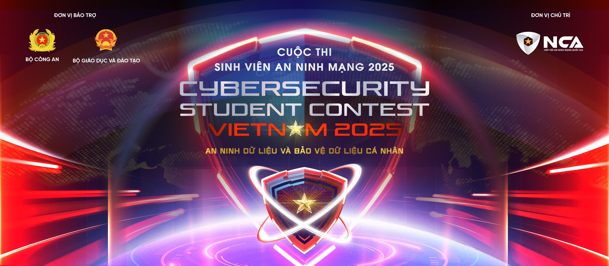

CTF WRITEUP · FORENSICS · NETWORK
Cuộc thi: Sinh viên An ninh mạng 2025 (CSCV 2025) — Vòng Sơ khảo
Nguồn: Toàn bộ nội dung trang này được tham khảo từ write-up của m1nhd4cc [Tham khảo]
Tác giả gốc: Dang Minh Duc (m1nhd4cc)
Phân tích lưu lượng mạng để khôi phục dữ liệu bị đánh cắp và mã hoá bằng AES, truyền ra ngoài qua DNS queries.
/admin/upload-media.phpAPP_SECRET=F0r3ns1c-2025-CSCVhex.cloudflar3.comtshark -r 10.10.0.53_ns_capture.pcap -T fields -e dns.qry.name | uniq | grep heximport hashlib, re
from Crypto.Cipher import AES
from Crypto.Util.Padding import unpad
app_secret = "F0r3ns1c-2025-CSCV"
h = hashlib.sha256(app_secret.encode()).hexdigest()
key = bytes.fromhex(h[0:32])
iv = bytes.fromhex(h[32:64])
dns_data, seen = [], set()
with open('dns_exfil.txt', 'r') as f:
for line in f:
line = line.strip()
if not line: continue
parts = line.split('\t')
dns_name = parts[-1] if parts else line
match = re.search(r'^([pf])\.([a-f0-9]+)\.hex\.cloudflar3\.com', dns_name)
if match:
prefix, hex_chunk = match.group(1), match.group(2)
uid = f"{prefix}:{hex_chunk}"
if uid not in seen:
seen.add(uid)
ts = parts[0] if len(parts) > 1 else ''
dns_data.append((ts, prefix, hex_chunk))
dns_data.sort()
prefix_data = {}
for ts, prefix, chunk in dns_data:
prefix_data.setdefault(prefix, []).append(chunk)
for prefix in sorted(prefix_data):
hex_data = ''.join(prefix_data[prefix])
cipher = AES.new(key, AES.MODE_CBC, iv)
plaintext = unpad(cipher.decrypt(bytes.fromhex(hex_data)), AES.block_size)
print(plaintext.decode('utf-8', errors='ignore'))CSCV2025{DnS_Exf1ltr4ti0nnnnnnnnnnNN!!}
Điều tra hệ thống người dùng bị xâm nhập để xác định cơ chế phát tán mã độc và đánh cắp dữ liệu.
secret)WebCacheV01.datFlashInstaller.hta192.168.11.1:30000x24) → .NET stealer DLLHKCU\SOFTWARE\hensh1n → identifier HxrYJgduDESKTOP-47ICHL6param(
[string]$InputPath = ".\90qeYSHA.txt",
[string]$OutputPath = ".\StealerJanai.dll",
[byte]$XorKey = 0x24
)
$raw = Get-Content -Raw -Path $InputPath
$matches = [Regex]::Matches($raw, '0x([0-9A-Fa-f]{1,2})')
$bytes = New-Object System.Collections.Generic.List[byte]
foreach ($m in $matches) {
$bytes.Add([Convert]::ToByte($m.Groups[1].Value, 16))
}
$out = New-Object byte[] ($bytes.Count)
for ($i = 0; $i -lt $bytes.Count; $i++) {
$out[$i] = $bytes[$i] -bxor $XorKey
}
[IO.File]::WriteAllBytes($OutputPath, $out)CSCV2025{your_computer_DESKTOP-47ICHL6_has_be3n_kicked_byHxrYJgdu}
Khôi phục dữ liệu từ ổ đĩa VHDX được mã hoá BitLocker bằng cách tìm recovery credentials trong hệ thống.
windowsAppData/Packages5525b8d2d8534b716467493f3660b11e1c44b22cd0c97275619b94a0e5c82fda028853-431640-166364-032076-217943-045837-542388-281017secret.zip bằng password từ SimpleNotessh.txt trỏ tới PastebinCSCV2025{h3Y_Th!s_|5_jUs7_tH3_bE9IN|\iNg_dc8fb5bdedd10877}
Phân tích PCAP để tìm kênh truyền dữ liệu ẩn và khôi phục dữ liệu bị đánh cắp.
192.168.203.91 qua NTP traffic192.168.192.1:3239tshark -r challenge.pcapng \
-Y "ip.src == 192.168.203.91 && ip.dst == 192.168.192.1 && tcp.dstport == 3239" \
-T fields -e tcp.checksum > out.txtimport base64
with open('out.txt', 'r') as f:
lines = f.readlines()
full_hex = ""
for line in lines:
full_hex += line.strip().replace('0x', '')
raw_bytes = bytes.fromhex(full_hex)
decoded = base64.b64decode(raw_bytes)
print(decoded.decode('utf-8', errors='ignore'))CSCV2025{my_chal_got_leaked_before_the_contest_bruh_here_is_your_new_flag_b8891c4e147c452b8cc6642f10400452}
| Challenge | Kỹ thuật chính | Công cụ |
|---|---|---|
| DNS Exfil | AES-CBC, DNS exfiltration, SHA256 key derivation | tshark, PyCryptodome |
| NostalgiaS | HTA malware, XOR decode, .NET stealer, Registry analysis | WebCacheV01.dat, dnSpy, RegistryExplorer |
| Case AlphaS | BitLocker recovery, IndexedDB forensics, ChatGPT history | FTK, SimpleNote, VHDX mount |
| CovertS | TCP checksum covert channel, Base64 | tshark, Python |
Toàn bộ nội dung trang này được sưu tầm từ:
Write-up sưu tầm [Tham khảo] · CSCV 2025 Sơ khảo · Forensics · Nguồn: m1nhd4cc